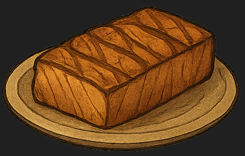
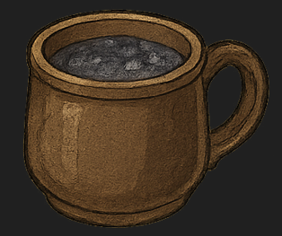
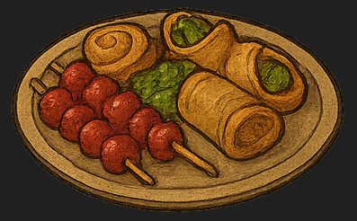
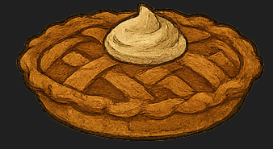

| Image |
Name |
Description |
Price |
 |
Dragonfire Stew |
A hearty stew simmered with slow-cooked beef, root vegetables, and a touch of “dragon spice” that packs a warming kick. Served in a rustic cauldron-style bowl. |
12 gold coins |
|  |
Shark Steak Supreme |
A thick cut of grilled shark, basted in herb butter and flame-kissed to perfection. A favorite for high-level adventurers seeking strength. |
25 gold coins |
|  |
Wizard’s Brew |
A frothy, deep-blue beverage infused with mystical herbs and berries. Said to restore mana (or at least give you a second wind). Non-alcoholic, with an optional spiked version. |
7 gold coins (10 gold with spirits) |
|  |
Gnome Delight Platter |
A colorful spread of miniature gnome treats — berry-glazed kebabs, crunchy veggie wraps, and honeyed pastries. Perfect for sharing (or hoarding). |
18 gold coins |
|  |
Lumbridge Apple Pie |
A traditional dessert straight from the Duke’s kitchens. Golden, flaky crust filled with spiced apples, served warm with a dollop of cream. |
9 gold coins |